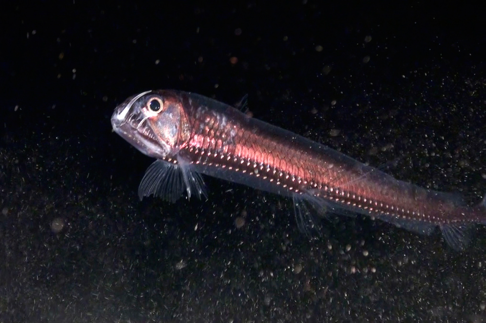
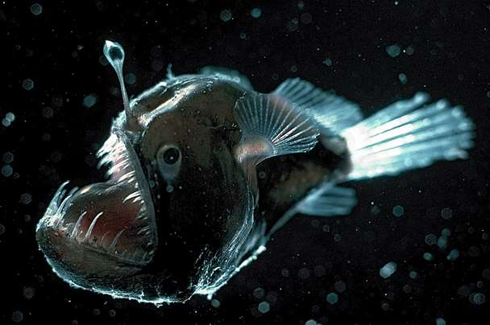
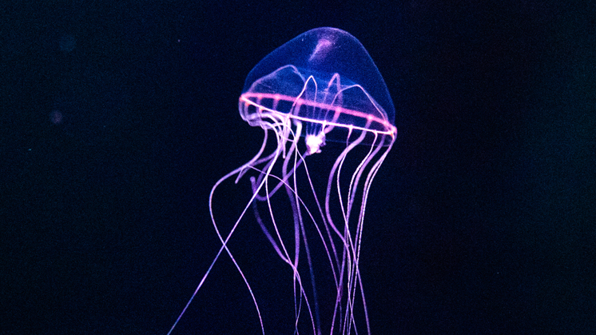
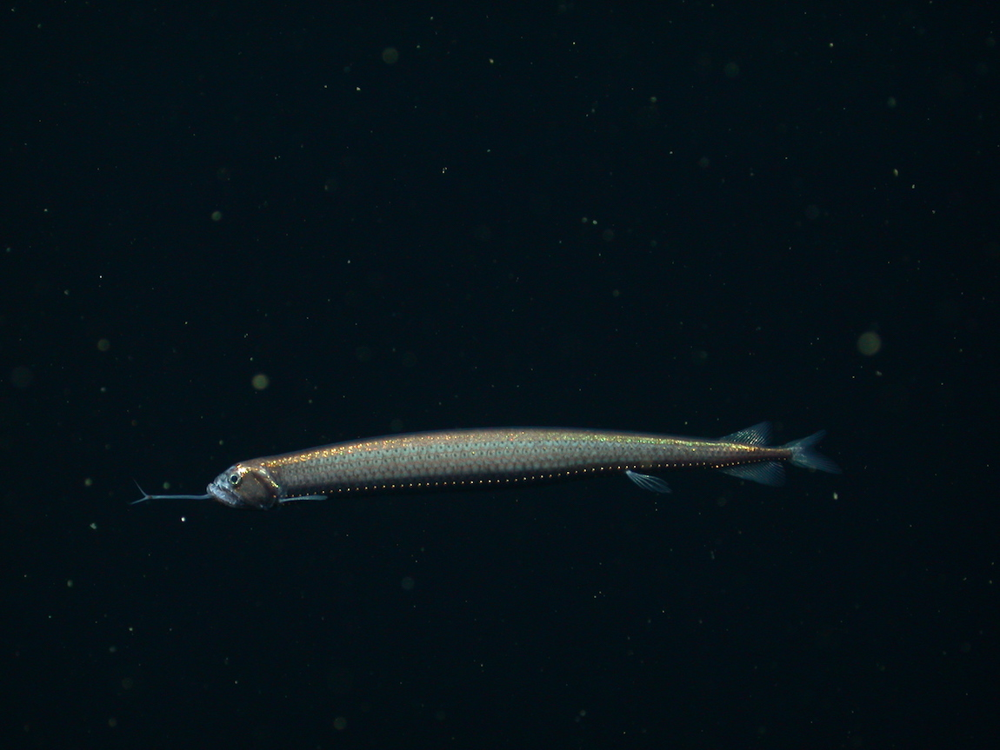

400m–6000m • Abyssoplagic Zone
The Silent Abyss
Below 4000m, darkness is absolute. Pressure is crushing. Life survives in silence and extreme conditions.

Viperfish
Anglerfish Dumbo Octopus
Dumbo Octopus
 Giant Isopod
Giant Isopod

Jellyfish Vampire Squid
Vampire Squid

Dragonfish Bioluminescence
Bioluminescence